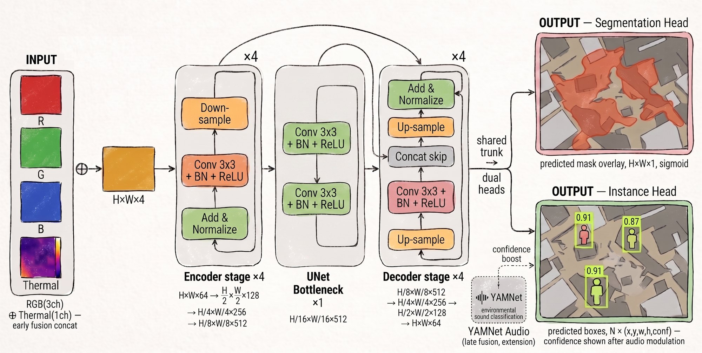
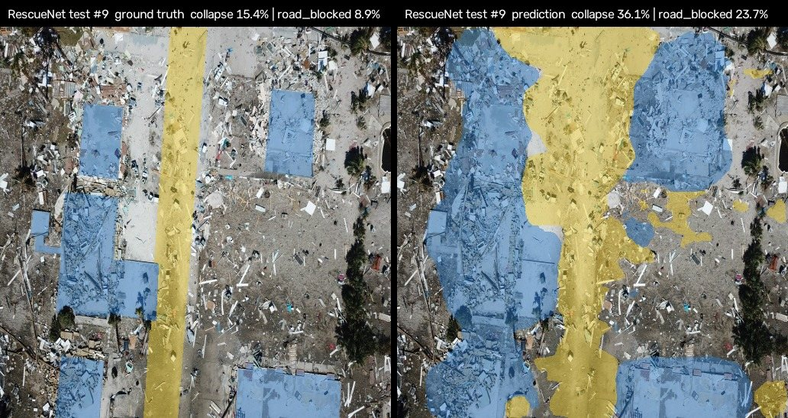
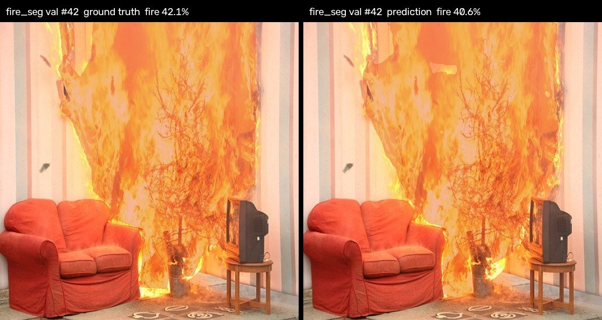
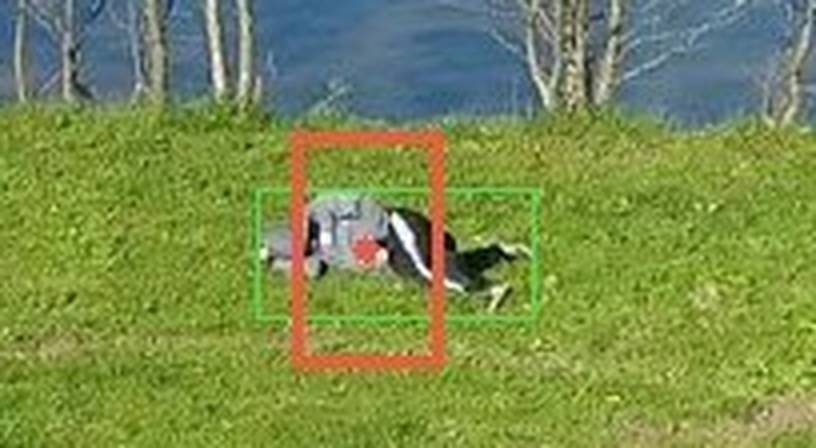
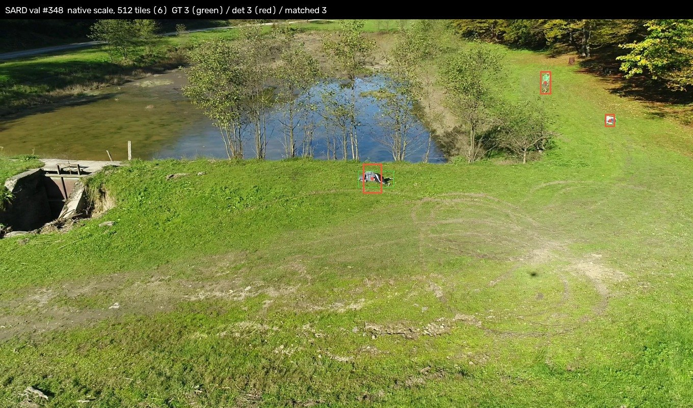
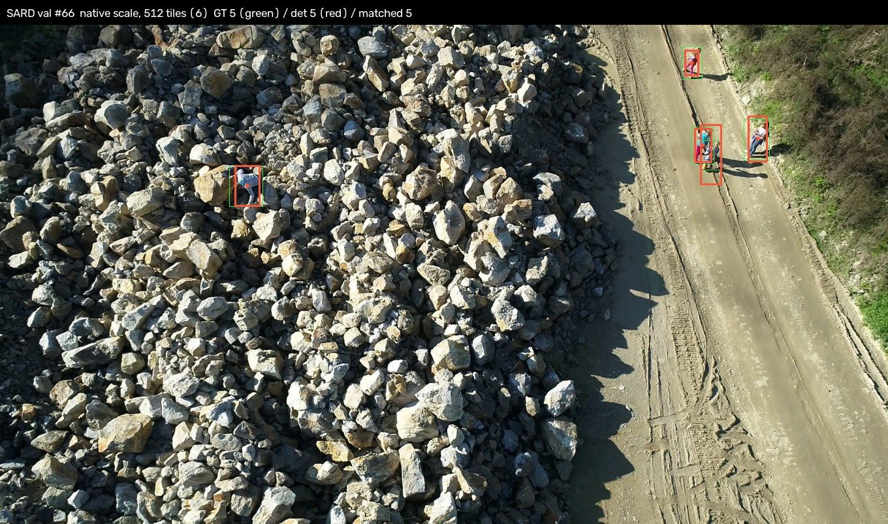
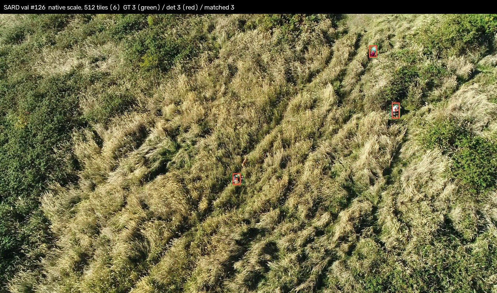
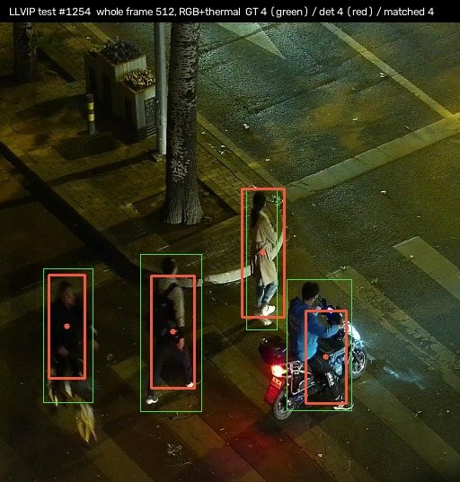

AI 모델
모델 하나가 전부 하는 구조가 아니에요. 성격이 다른 문제를 네 개의 층이 나눠 맡고, 각 층은 자기 문제만 풀어요. 이 분리가 나머지 결정을 거의 다 만들어 냈어요.
네 개의 층
| 층 | 성격 | 무엇을 아나요 |
|---|---|---|
| ① 탐지 (UNet) | 학습해요 | 이미지 한 장. 그게 전부예요 |
| ② 투영 (레이캐스팅) | 학습 안 해요 · 기하 계산 | 카메라 위치와 깊이 |
| ③ 랜드마크 융합 | 학습 안 해요 · 기억해요 | 3D 공간 전체와 시간 누적 |
| ④ 소리 보정 (YAMNet) | 이미 학습된 모델 · 확장 | 환경음. 확신도를 조정해요 |
탐지기는 앞뒤를 안 봐요
탐지 모델의 입력은 프레임 한 장이고 출력은 그 프레임의 2D 결과예요. 이전 프레임과의 연결도, 기억도 없어요. 순수 함수처럼 다뤄요.
시간에 걸친 일관성은 ③번 층이 이미 담당하거든요. 모델까지 시계열을 보면 역할이 겹쳐요. 게다가 시계열 모델은 훨씬 무겁고 데이터를 훨씬 많이 요구하는데, 재난 현장 데이터는 원래 부족해요. 대신 프레임을 드론 구분 없이 큐에 넣고 한꺼번에 추론할 수 있어서 GPU 효율이 좋아요.
RGB에 열화상을 붙여서 4채널로 넣어요
밤이거나 연기가 차 있으면 일반 카메라는 아무것도 못 봐요. 열화상은 그럴 때도 사람과 불을 봐요. 그래서 둘을 입력 단계에서 합쳐요. 일반 영상 3채널에 열화상 1채널을 붙여 4채널을 만들고, 그걸 모델 하나에 넣어요 (Early Fusion).
나중에 결과끼리 합치는 게 아니라 처음부터 같이 보게 하는 거예요. 그래야 모델이 "여기 온도가 높고 형태가 사람 같다" 같은 판단을 한 번에 할 수 있어요.
백본은 하나, 헤드는 둘
무거운 부분(백본)은 한 번만 돌리고, 그 결과를 두 갈래로 나눠 써요. 두 과제가 같은 특징을 보기 때문에 이게 연산상으로도 이득이에요.
나눈 이유는 찾으려는 것의 성질이 다르기 때문이에요. 위험구역은 "여기부터 저기까지"처럼 넓게 퍼진 영역이라 영역으로 나누는 게 맞고, 사람은 잔해 속 작은 대상이고 다음 단계에서 어차피 "위치 하나 + 확신도"로 다뤄야 해서 점으로 찍는 게 맞아요.

| 값 | 클래스 | 뜻 |
|---|---|---|
| 0 | normal | 특별한 게 없는 곳 |
| 1 | fire | 불 |
| 2 | collapse | 붕괴 |
| 3 | road_blocked | 길이 막힘 |
| 255 | ignore | 라벨이 없어 학습에서 빼는 픽셀 |
이렇게 찾아요
채택 모델(research v6)을 학습에 쓰지 않은 검증·시험 이미지에 돌린 결과예요. 위험구역은 왼쪽이 정답, 오른쪽이 모델 출력이에요. 사람은 초록 상자가 정답, 빨간 상자와 점이 모델이 찾은 사람이에요.
- 0.86사람 재현율 (정밀도 0.5에서). 데이터셋마다 따로 학습한 YOLOv8x 세 개는 0.85
- 0.74붕괴 IoU. 목표 0.65
- 0.42도로 차단 IoU. 목표 0.30, 선행 연구 0.33
- 0.48화재 IoU. 목표 0.50에 조금 못 미쳤어요


사람은 상자가 아니라 점으로 찾아요
드론은 사람을 위에서 비스듬히 내려다봐요. 데모 촬영본도 이륙 지점에서 40m 넘게 떠서 카메라를 아래로 약 60° 숙여 찍었어요. 이 각도에서는 사람을 감싸는 상자의 모양이 촬영 각에 따라 계속 바뀌어요. 바로 위에서 보면 머리와 어깨만 작게 보이고, 비스듬히 보면 키만큼 길어지고, 누워 있거나 풀과 잔해에 반쯤 가린 사람은 어디까지가 몸인지 경계가 흐려요. 같은 사람이라도 드론과 각도가 바뀔 때마다 "맞는 상자"가 달라지는 셈이에요.
반면 사람이 어디 있는지는 어느 각도에서 봐도 같아요. 그리고 SkyLens가 실제로 쓰는 것도 그 위치 하나예요. 점을 복원된 3D 위로 투영해 GPS 좌표로 바꾸고, 여러 드론이 다른 각도에서 본 것을 그 좌표에서 합쳐요. 상자의 크기는 이 과정 어디에도 쓰이지 않아요.
실험으로도 확인했어요. 상자 크기를 맞추는 학습이 공유 백본을 흔들지 않게 끊었더니 상자 품질은 떨어졌지만, SARD 재현율은 0.8813에서 0.9012로, 도로 차단 IoU는 0.3249에서 0.4175로 올랐어요. 그래서 사람 성능도 점이 사람 몸 위에 있는지로 판정해요.





왜 최신 모델이 아니라 UNet인가요
재난 대응 시스템에서 모델을 고르는 첫 기준은 최신성이 아니라 신뢰성이에요. 사람 목숨이 걸린 현장에서는, 잠재력은 크지만 거동이 불확실한 기법보다 같은 입력에 같은 답을 주고 시간 안에 끝나는 구조가 먼저예요.
말로 찾고 싶은 걸 지정하는 최신 방식(VLM 기반 Open-Vocabulary 분할)도 후보로 봤어요. 두 가지가 걸렸어요. 연산이 무거워 준실시간 갱신을 위협하고, 출력이 프롬프트에 민감해서 같은 입력에도 판단이 흔들릴 수 있어요.
UNet 계열은 영역 분할에서 오래 검증된 표준이고, 4채널로 넓히기 쉽고, 추론이 가볍고, 결과가 일관돼요. 구조대원이 진입 판단에 믿고 쓸 수 있는 쪽을 골랐어요.
한쪽 카메라가 없어도 돌아가요
열화상 카메라가 고장 나거나, 드론 일부만 열화상을 달고 있거나, 데이터셋에 한쪽만 있는 상황은 드물지 않아요. 결손은 예외가 아니라 정상 상태로 다뤄요.
학습할 때 일부러 한쪽 채널을 가려 가며 돌려서(modality dropout), 일반 영상만 있을 때·열화상만 있을 때·둘 다 있을 때 세 경우 모두에서 동작하게 만들어요.
2D 탐지를 3D 좌표로 바꿔요
탐지 모델이 내놓는 건 "이 사진의 이 픽셀"이에요. 3D 위에 마커를 찍으려면 그게 실제 세계 어디인지를 알아야 해요. 별도의 3D 탐지 모델을 두지 않고 기하학으로 풀어요.
핵심은 깊이를 센서에서 얻지 않는다는 점이에요. 이미 복원해 둔 점들을 그 프레임을 찍은 카메라 위치로 투영하면, 픽셀마다 가장 앞에 있는 면이 정해져요. 탐지 결과는 그 앞면에만 얹어요. 벽 뒤에 가려진 바닥은 증거를 받지 않아요.
픽셀 (u, v) 와 깊이 Z 에서 카메라 기준 좌표를 구해요
X_c = (u - c_x) · Z / f_x
Y_c = (v - c_y) · Z / f_y
Z_c = Z
그다음 드론의 위치·자세 [R | t] 로 세계좌표로 옮겨요
(X_c, Y_c, Z_c) ──[R | t]──▶ (X_w, Y_w, Z_w)이 계산은 GPU 서버에서 한 번만 해요. 마커는 거기서 세계좌표로 고정돼서 저장되고, 화면은 받아서 표시만 해요. 보는 각도가 바뀐다고 다시 계산하지 않아요.
증거는 현장 전체에 하나뿐인 지도에 쌓여요. 바닥을 가로세로 칸으로 나누고 높이도 층으로 나눠서, 지붕과 그 아래 땅은 다른 칸이에요. 같은 곳을 다시 지나가거나 다른 드론이 보면 같은 칸에 더해지고, 같은 대상은 끝까지 같은 이름으로 남아요.
같은 사람인지 어떻게 아나요
같은 사람이 여러 프레임에 걸쳐 잡혀요. 그걸 생김새로 대조하지 않아요. 전부 3D 좌표로 바꾼 다음 좌표가 가까우면 같은 대상으로 묶어요. 드론 위치를 이미 알고 있으니까 기하학적으로 푸는 게 더 정확하고 단순해요.
프레임마다 확신도가 흔들려도(0.6 → 0.4 → 못 찾음) 괜찮아요. 확신도는 그 사람이 화면에 들어온 횟수로 찾은 점수의 합을 나눈 값이라, 볼수록 수렴해요. 가려져서 안 보인 프레임은 놓친 걸로 세지 않아요. 한 프레임의 두 탐지는 언제나 다른 사람이에요.
한 드론이 2초 안에 찍은 프레임들은 한 번 본 것으로 쳐요. 그리고 서로 다른 시점 두 번 이상에서 봐야 화면에 올라가요. 그래서 다른 드론이 다른 각도에서 잡은 것이, 같은 드론의 연속 프레임보다 훨씬 강한 증거예요.
위험구역도 같은 지도에 칸마다 클래스 확률을 쌓아요. 가장 그럴듯한 클래스가 위험 클래스이고 그 평균 확률이 0.5 이상인 칸만 위험구역이 되고, 붙어 있는 칸끼리 하나의 구역으로 묶어요.
3D 품질과 탐지는 별개예요. 장면이 아직 거칠어도 탐지는 그대로 돌아가요. 장면 품질이 영향을 주는 건 마커 좌표의 정밀도뿐이에요. 확신도가 올라가는 이유는 "장면이 촘촘해져서"가 아니라 "여러 각도에서 반복해서 봤기 때문"이에요.
3D 복원은 실제로 돌려 봤어요
지금은 cumulus3d가 드론 영상에서 바로 점군을 쌓고, deltamesh가 그 위에 0.1m 메시를 덮어요. 이 구조를 KOREN 실배치 위에서 처음부터 끝까지 재 봤어요. 드론 3대가 각자 53초 분량의 영상을 동시에 보낸 조건이에요(SRT, 드론당 2.5Mbps).
실서버에서 걸린 시간
| 시각 | 끝난 일 | 걸린 시간 |
|---|---|---|
| 0초 | 드론 3대 영상 송출 시작 | 없음 |
| 22.1초 | 첫 프레임 묶음(카메라 3장)이 판교 V100에 도착 | 22.1초 |
| 39.2초 | 첫 구역 복원 완료, 현황판에 첫 데이터 표시 | 17.1초 |
| 92초 | 마지막 프레임 수신 (수신 구간 70.4초) | 70.4초 |
| 324초 | 마지막 구역 복원 완료, 현황판에 마지막 데이터 도착 | 231.8초 |
송출을 시작하고 39.2초 만에 지휘관이 첫 화면을 봐요. 전체는 324초 (약 5분 24초)가 걸렸어요. 복원이 영상보다 느려서, 마지막 프레임을 받은 뒤에도 4분 가까이 남은 구역을 복원해요. 처리량이 영상 속도를 따라가지 못하는 게 이 구조의 한계예요.
그 전에는 3DGS로 설계를 정했어요
처음 설계는 COLMAP으로 카메라 위치를 풀고 gsplat(3D Gaussian Splatting)으로 장면을 학습하는 방식이었어요. 아래 숫자는 그때 실내 복도를 세 번 지나며 찍은 영상 3편으로 잰 거예요. 매칭과 학습에 수십 분이 걸려 비행 중에 화면을 채우기 어려워서 라이브 복원은 cumulus3d로 바꿨지만, "거칠게 먼저 띄우고 뒤에서 다듬는다"는 딜레이 패턴의 근거는 여기서 나왔어요.
- 540 / 540프레임 전부가 하나의 모델에 등록됐어요
- 653,353복원된 3D 덩어리(가우시안) 개수
- 23.62 dBPSNR. SSIM 0.907 · LPIPS 0.301
여기까지가 "복원이 된다"의 근거예요. 그런데 한 번 돌려 본 걸로는 설계 근거가 안 돼요. 그래서 학습 조건을 28개 돌려서 아래 것들을 숫자로 정했어요.
특징점은 ALIKED로 바꿨어요
| 항목 | SIFT | ALIKED + LightGlue |
|---|---|---|
| 검증 통과율 | 56% | 91% |
| 등록 결과 | 3개 모델로 쪼개졌어요 | 540장 전부 하나로 붙었어요 |
| 걸린 시간 | 1시간 7분 | 54분 |
흰 벽에 반사되는 바닥, 반복되는 구조. 실내는 특징이 잘 안 잡혀요. SIFT는 특징점을 3.3배 많이 잡지만 절반이 검증에서 떨어지고, 살아남은 잘못된 짝이 카메라 보정을 발산시켜요. 정확도와 속도 양쪽에서 ALIKED가 이겼어요.
거친 결과를 먼저 띄우는 게 실제로 성립해요
| 스텝 | PSNR | 가우시안 | 경량 파일 |
|---|---|---|---|
| 250 | 16.09 | 12,708 | 0.7 MB |
| 1,000 | 18.47 | 19,368 | 1.0 MB |
| 7,000 | 21.48 | 316,057 | 16.9 MB |
| 30,000 | 23.62 | 653,353 | 34.9 MB |
250 → 1,000에서 2.38dB가 오르는 동안, 10,000 → 30,000에서는 1.60dB밖에 안 올라요. 전체의 3%인 1,000스텝에서 최종과의 차이가 5.15dB까지 좁혀져요. 낮은 스텝으로 먼저 띄우고 계속 개선하는 구조가 실제로 가능하다는 뜻이에요.
전송량이 0.7MB에서 34.9MB로 50배 벌어지는 것도 중요해요. 이게 딜레이 패턴으로 나눠 보내는 설계의 근거예요.
장수가 늘면 매칭은 제곱으로 늘어요
드론 위치를 카메라 위치로 그냥 쓸 수는 없어요
- 자세 오차 0.1°
- −0.08 dB
- 자세 오차 1.0°
- −2.70 dB
- 위치 오차 0.2%
- −2.24 dB
- 위치 오차 0.5%
- −3.60 dB
위치 오차가 자세 오차보다 훨씬 치명적이에요. 위치 0.2%만큼의 손해를 자세로 내려면 0.8°가 필요해요. GPS 수평 오차가 0.5~1.5m라 이 규모를 크게 웃돌아요. 그래서 드론이 알려 주는 위치를 카메라 위치로 직접 쓰지 않고, 영상에서 다시 푸는 현재 설계가 맞다는 게 실측으로 확정됐어요.
판정하지 못한 것. 드론 편대를 얼마나 벌려 놓을지 실험은 6조건을 돌렸는데, 조건마다 평가 세트가 달라서 숫자를 비교할 수 없었어요. 정황상 간격을 넓히는 쪽이 유력해 보였지만, 공통 평가 세트로 다시 재지 않았으니 결론이라고 말하지 않아요.
(확장) 소리로 놓친 사람을 찾아요
열영상은 잔해가 두꺼우면 2m 깊이까지가 한계예요. 소리는 더 깊은 곳도 닿아요. 신음·기침·두드리는 소리·구조 요청 같은 환경음을 분류해서, 그 구역 사람 마커의 확신도를 올려요. 놓치는 걸 줄이는 쪽으로 쓰는 거예요.
마이크가 여럿이면 다수결로 판정하고, 드론이 여럿이면 소리 발생 위치를 삼각측량으로 좁힐 수 있어요.
왜 최고 성능 모델 대신 YAMNet인가요
- CPU에서 실시간으로 돌아요. MobileNet 기반 초경량이라 3D 복원이 쓰는 GPU를 뺏지 않아요.
- 우리가 하려는 게 음성 인식이 아니에요. 말을 알아듣는 게 아니라 환경음을 구분하는 거예요. YAMNet은 환경음 521종으로 학습돼 있어요.
- 필요한 클래스를 이미 갖고 있어요. 울음·비명·신음·두드림이 들어 있어서 추가 학습 없이 바로 시연할 수 있어요.
이건 확장이에요. 이번 단계의 필수 범위는 3D 복원과 영상 AI예요. 소리는 따로 떼어 두고 로드맵으로 둬요.